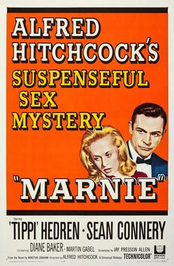

Marnie
1964 film by Alfred Hitchcock
Marnie is a 1964 American psychological thriller film directed by Alfred Hitchcock from a screenplay by Jay Presson Allen, based on the 1961 novel of the same name by Winston Graham. The film stars Tippi Hedren and Sean Connery. Marnie became a milestone for several reasons. It was the last time a "Hitchcock blonde" would have a central role in one of his films.
Trivia
- Based on Marnie (novel by Winston Graham (first published 1961)).
- Alfred Hitchcock began developing the film adaptation of Winston Graham's novel Marnie in 1961.
- Stefano made extensive notes and wrote a 161-page treatment.
- The director's first choice to play the title role, Grace Kelly, by then Princess Grace of Monaco, withdrew from the project when the citizens of Monaco objected to her appearing in a film, especially as a sexually disturbed thief.
Previous Showings
7 Runs • 7 Festivals
9,723 tickets sold
All runs on record (7):
- April 20 - 23, 2000 · 2,958 ticketsHitchcock 2000w/ Tippi Hedren, The Birds
- September 29 - October 1, 2009 · 578 ticketsHITCHCOCKw/ The Trouble with Harry
- April 21 - 24, 2016 · 1,644 ticketsHitchcock 2016w/ The Birds
- April 5 - 7, 2019 · 1,743 ticketsHitchcock, Master of Suspensew/ Vertigo
- June 8 - 9, 2024 · 1,614 ticketsHitchcock The Master of Suspensew/ The Birds
- July 16 - 17, 2025 · 563 ticketsHitchcock The Master of Suspensew/ The Trouble with Harry
- May 21 - 22, 2026 · 623 ticketsHitchcock The Master of Suspensew/ The Trouble with Harry